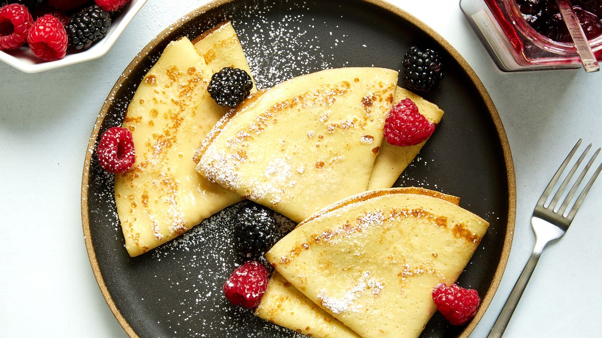
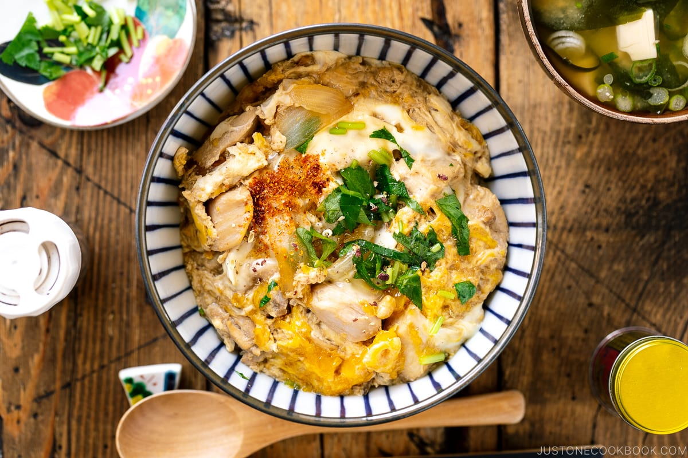
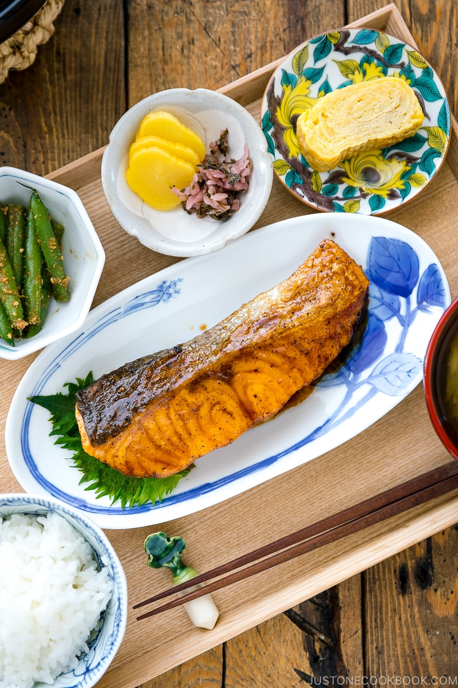
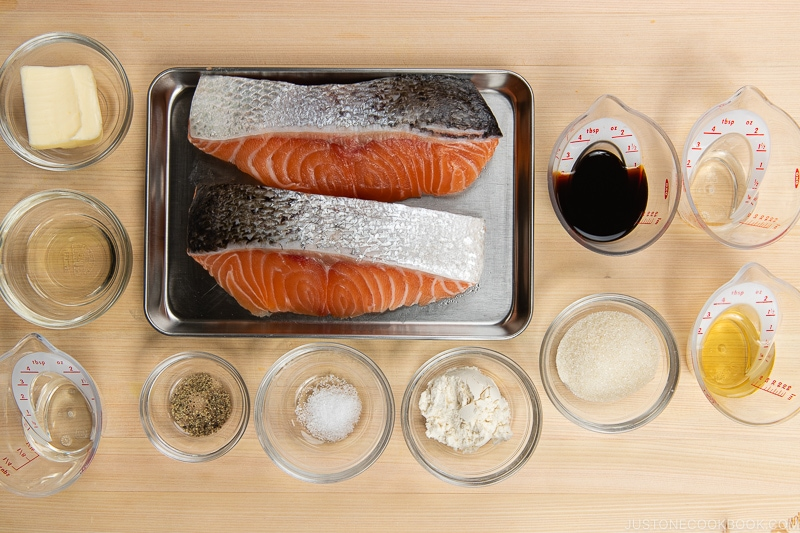
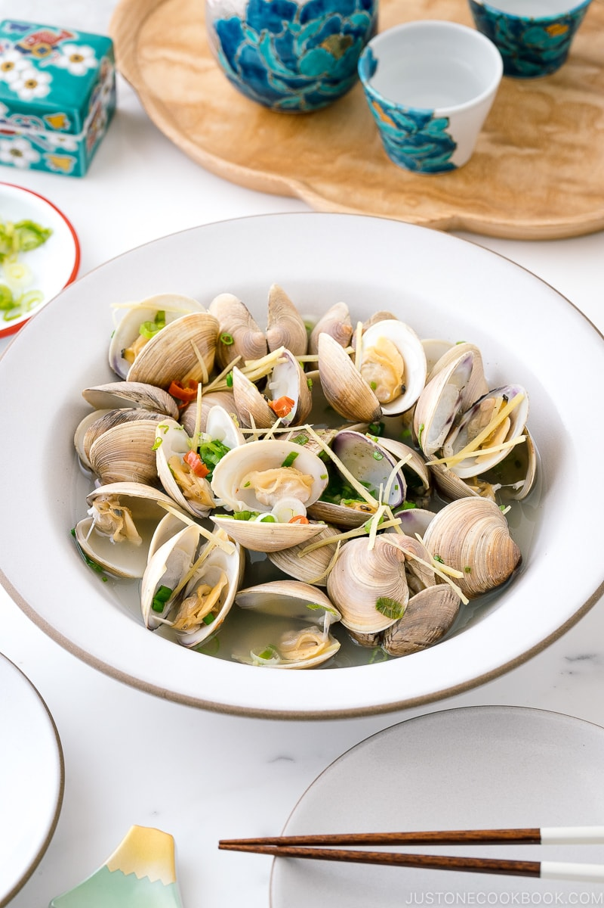
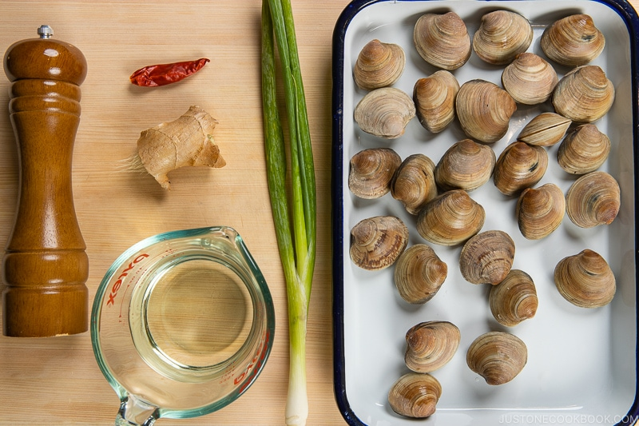

My Recipe
Welcome to my recipe collection :p hope you enjoy reading it
Homemade Ratatouille Recipe

Honestly, if it weren't for that Disney movie about the rat, I doubt I would have been so eager to try my ratatouille recipe. But once I did, I was delighted and now it's a dish I love to make when I feel like me and my family should have something meatless.
Made with a bounty of fresh, colorful vegetables, you'll love the garden-fresh flavors in this tasty meal!
Source: https://www.howtocook.recipes/homemade-ratatouille-recipe/
#Main Dish, #Vegan
Ingredients
- 2 tbsp olive oil (divided)
- 4 garlic cloves (minced)
- 1/2 small onion (chopped)
- 1/3 cup carrot (shredded)
- 14 oz crushed tomatoes
- 2 tsp dried basil
- 1/2 tsp dried parsley
- 1 small eggplant (sliced 1/8 inch thick circles)
- 2 small zucchini (sliced 1/8 inch thick circles)
- 3 Roma tomatoes (sliced 1/8 inch thick circles)
- salt (to taste)
- black pepper (to taste)
Instructions
- Step 1: Preheat the oven to 375F. In a large nonstick pan, heat 2 tablespoons of olive oil over medium high heat. Add in the onion, garlic, and carrot and cook until tender, about 5 minutes.
- Step 2: Next, add in the crushed tomatoes and seasonings and simmer for 15 minutes. Taste and adjust the seasoning with salt and pepper. Once the sauce has thickened, pour into a 2 quart baking dish.
- Step 3: Arrange the sliced vegetables in a circular pattern standing upright in the dish over the sauce. Brush with the remaining olive oil. Cover and bake for 30 minutes, then uncover and bake until vegetables are tender. Serve immediately.
Basic Crêpes
Crêpes can be filled with all sorts of tasty things—fresh fruit and whipped cream, leftover ham and cheese, roasted vegetables—but a truly excellent crêpe can be eaten straight out of the pan, all on its own.
With that in mind, we’ve fine-tuned this recipe to yield crêpes that are buttery and just sweet enough to caramelize lightly in the pan.
Source: https://www.delish.com/cooking/recipe-ideas/recipes/a52114/easy-basic-crepe-recipe/
#Dessert, #Vegetarian
Ingredients
- 2 large eggs, room temperature
- 1/4 cup whole milk, room temperature
- 120g all-purpose flour
- 4 tsp granulated sugar
- 1/2 tsp kosher salt
- 3 tbsp unsalted butter, melted, cooled, plus 1/2 tsp cold unsalted butter
- Fresh berries and powdered sugar, for serving (optional)
Instructions
- Step 1: In a blender, blend eggs, milk, flour, granulated sugar, salt, and 3 tablespoons melted butter until smooth, about 1 minute. Cover and refrigerate at least 1 hour or up to 2 days.
- Step 2: Preheat a 9" nonstick skillet over medium heat. Melt 1/2 teaspoon cold butter in preheated pan. Reduce heat to medium-low. Briefly whisk batter, then pour 1/4 cup into center of pan, lifting pan off heat and slightly tilting in a circular motion to help batter spread into an even circle. Cook until top is set and bottom is golden brown, about 45 seconds. Flip and cook on second side until cooked through, about 45 seconds more.
- Step 3: Using a spatula, fold crêpe into quarters. Transfer to plate. Repeat with remaining batter for a total of 8 crêpes.
- Step 4: Serve with berries and powdered sugar, if desired.
- Step 5: Make Ahead: Crêpes can be made 3 days ahead. Let cool, then stack between sheets of parchment, store in an airtight container, and refrigerate, or freeze up to 1 month.
Oyakodon (Chicken and Egg Rice Bowl)
Oyakodon is a classic comfort food of Japanese home cooking. Tender pieces of chicken, onion, and eggs are simmered in an umami-rich, dashi-based sauce and then poured over a bowl of fluffy steamed rice. Simple, delicious, and utterly comforting, this is the kind of one-bowl meal you can cook in less than 30 minutes!
Source: https://www.justonecookbook.com/oyakodon/
#Main Dish, #Seafood
Ingredients
- 1/2 onion (4 oz, 113 g; peeled)
- 10 oz boneless, skinless chicken thighs
- 1 Tbsp sake
- 3–4 large eggs (50 g each w/o shell), at room temp
- 1/2 cup dashi (Japanese soup stock)
- 2 Tbsp soy sauce
- 2 Tbsp mirin
- 2 Tbsp sugar
- 2 servings cooked Japanese
- short-grain rice
Instructions
- Step 1: Combine ½ cup dashi (Japanese soup stock), 2 Tbsp soy sauce, 2 Tbsp mirin, and 2 tsp sugar in a bowl or a liquid measuring cup and mix all together until the sugar is dissolved.
- Step 2: Slice ½ onion lengthwise, about ¼ inch (6 mm) wide. Trim the extra bits of fat and connective tissue from 10 oz boneless, skinless chicken thighs with the knife.
- Step 3: Cut the chicken thigh along the grain into strips ¾–1 inch (2–2.5 cm) wide. Next, angle your knife back and diagonally (nearly parallel to the cutting board), and then slice the chicken strips against the grain into pieces about ¾–1 inch (2–2.5 cm) square. This sogigiri cutting technique gives the chicken pieces equal thickness and creates more surface area for fast cooking and better absorption of the flavors.
- Step 4: Transfer the chicken to a bowl or tray and sprinkle with 1 Tbsp sake. Set aside for 5 minutes.
- Step 5: Crack 3–4 large eggs (50 g each w/o shell) into a bowl. Using a pair of chopsticks, lift the egg whites to “cut“ them 5–6 times into a few smaller clumps.
- Step 6: With the stove off, add the sliced onions to a medium frying pan (I use a well-seasoned 11” carbon steel pan) in a single layer. Then, add the seasonings mixture. It should just cover the onions. If not, your frying pan is too big and you need to either increase the seasoning or use a smaller pan.
- Step 7: Turn on the heat to medium and bring it to a simmer. Once simmering, add the chicken on top of the onions.
- Step 8: Make sure the onions and chicken are evenly distributed. Once simmering again, lower the heat to medium low. Cook, uncovered, for 5 minutes or until the chicken is no longer pink and the onions are tender.
- Step 9: We will add the eggs in two stages: Two-thirds of the eggs first, then the remaining one-third later. Now, increase the heat to medium. With the cooking liquid simmering (small bubbles around the edges), drizzle two-thirds of the eggs in a circular pattern over the chicken and onions, avoiding the edges of the pan where the eggs can easily overcook.
- Step 10: When the eggs are still runny but just set, add the rest of the eggs to the center and around the edges of the pan. Add the mitsuba (or green onion) on top and cook on medium low until the egg is done to your liking. Usually, oyakodon in Japan is served while the egg is almost set but still runny (raw eggs are safe to consume in Japan).
- Step 11: Turn off the heat and serve the oyakodon over steamed rice in a donburi bowl. Garnish with shichimi togarashi (Japanese seven spice) if you like.
Teriyaki Salmon 鮭の照り焼き
Use this quick and easy Teriyaki Salmon recipe to make a light and savory meal any night of the week. Salmon fillets are pan-grilled to tender perfection in the traditional method and finished with an authentic homemade teriyaki sauce.
Source: https://www.justonecookbook.com/teriyaki-salmon-recipe/
#Main Dish, #Seafood
Ingredients
For the Teriyaki Sauce
- 2 Tbsp soy sauce
- 1 Tbsp mirin
- 1 Tbsp sugar
- 1 Tbsp sake
For the Salmon
- 2 skin-on salmon fillets
- 1/4 tsp Diamond Crystal kosher salt
- 1/8 tsp freshly ground black pepper
- 1 Tbsp all-purpose flour (plain flour)
- 1/2 Tbsp neutral oil
- 1 Tbsp unsalted butter
- 1 Tbsp sake
Instructions
- Step 1: In a microwave-safe bowl, combine the ingredients for the teriyaki sauce: 1 Tbsp sake, 1 Tbsp mirin, 2 Tbsp soy sauce, and 1 Tbsp sugar. Mix well to dissolve the sugar. To help dissolve the sugar, you can microwave the mixture for 30 seconds.
- Step 2: Rinse 2 skin-on salmon fillets and pat dry. Season one side with half of the ¼ tsp Diamond Crystal kosher salt and half of the ⅛ tsp freshly ground black pepper. Flip over and season the other side with the remaining salt and black pepper.
- Step 3: Sprinkle half of the 1 Tbsp all-purpose flour (plain flour) on one side of the salmon and coat evenly. Flip over and sprinkle the rest of the flour on the other side. Gently press it to adhere and then remove the excess flour.
- Step 4: Heat a frying pan over medium heat. When the pan is hot, add ½ Tbsp neutral oil and 1 Tbsp unsalted butter. Take care not to burn the butter. If the frying pan gets too hot, reduce the heat or remove it from the heat temporarily. Then, sear the skin of the salmon fillets: One at a time, press the skin against the hot frying pan's surface for 15 seconds before laying it skin side (or presentation side) down in the pan. Repeat with the remaining salmon.
- Step 6: Cook the salmon for 3 minutes, or until the bottom is golden brown, and then flip.
- Step 7: To the pan, add 1–2 Tbsp sake—1 Tbsp for thin fillets and no more than 2 Tbsp for thicker fillets. Cover the pan with a lid and reduce the stove‘s heat to low. Steam the salmon for about 3–5 minutes, depending on the fillet thickness. If the sake has evaporated but the salmon isn't cooked through yet, add another tablespoon of sake and continue steaming.
- Step 8: Cook the salmon until it registers an internal temperature of 125–130°F (52–54ºC) at the thickest part of the fillet.
Japanese Sake Steamed Clams
My Japanese Sake-Steamed Clams recipe takes just 10 minutes and 5 ingredients to make. A favorite izakaya menu item, this seafood fare exudes a fun, casual vibe when enjoyed with an ice-cold beverage. It‘s minimum fuss with maximum flavors!
Source: https://www.justonecookbook.com/japanese-sake-steamed-clams/
#Appetizer, #Seafood
Ingredients
- 1 green onion/scallion
- 1 knob ginger
- 1 dried red chili pepper
- 1½ lbs manila clams
- 3/4 cup sake
- freshly ground black pepper (optional)
Instructions
- Step 1: Slice 1 green onion/scallion thinly and set it aside. Peel the skin of 1 knob ginger, cut it into thin slabs, and julienne into thin strips. Remove the seeds from 1 dried red chili pepper and cut the chili pepper into small rounds.
- Step 2: In a large frying pan, place 1½ lbs manila clams in a single layer and add ¾ cup sake. In a large frying pan, place 1½ lbs manila clams in a single layer and add ¾ cup sake.
- Step 3: Once it's bubbling nicely, lower the heat to medium and continue to steam for 3–5 minutes (2–3 minutes for smaller clams) until all the clams open their shells. Shake the pan once in a while to make sure the clams are not over-lapping each other. Remove and discard any clams that have not opened after you're done cooking.
- Step 4: Remove the lid and add the sliced green onion and freshly ground black pepper.
- Step 5: Transfer the clams to a serving bowl with the remaining sauce and serve immediately.